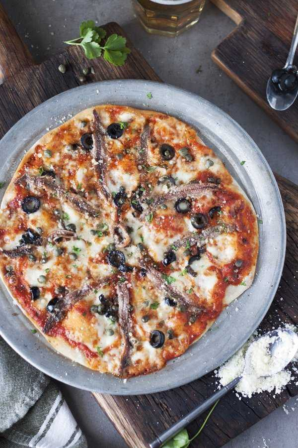

Anchovies Pizza
Return to homepage

Pizza with anchovies
Cured anchovies on pizza is an old secret when it comes to boosting flavor. But if you are an anchovies lover like me simply adding a couple to the pizza toppings or working them into the sauce is not enough.
Ingredients
- 16-20 oz pizza dough
- 8 oz anchovy fillets in olive oil
- 8 tbsp sour cream (or creme fraiche), adjust to taste
- 1 small onion, sliced very thin
- 4 small lemons, sliced ultra thin
- black pepper, freshly ground, as needed
- 1 tbsp Italian flat leaf parsley, finely chopped for garnish
Instructions
- Heat the oven to 425 F. Bring the dough to room temperature if it was refrigerated. Prepare pizza pans.
- Divide the dough in 4 equal parts, roll out thin to make about 10 inch individual pizzas.
- Spread 2 tbsp of sour cream onto each crust. Scatter thinly sliced onions, arrange the thinly sliced lemon circles on top and finally scatter the anchovy fillets. Season with black pepper.
- Bake for about 10 minutes or until the edges of the thin crust are crisp and nicely browned and the lemon slices just begin to caramelize. Garnish with parsley.